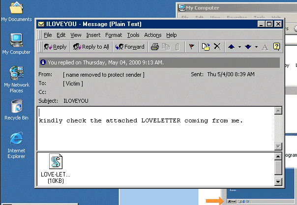

Review and analysis of the ILoveYou virus [ And about the infostiler under the guise of Windows 11 update ]
В начале 21 века появился надежный высокоскоростной интернет-доступ, и это изменило методы распространения вредоносных программ. Теперь они не были ограничены дискетами и корпоративными сетями и могли очень быстро распростронятся через электронную почту, популярные веб-сайты и даже напрямую через интернет. Начало формироватся вредоносное ПО в современном виде. Ландшафт угроз оказался заселенным вирусами, червями и троянами. Возник собирательный термин «вредоносное ПО». Одна из самых серьезных эпидемий новой эры была вызвана червем ILoveYou, который появился 4 мая 2000 г.
Как указывает Securelist, ILoveYou следовал модели ранее существовавших вирусов, распространявшихся по почте. При этом, в отличие от макровирусов, широко распространенных с 1995 года, ILoveYou распространялся не в виде зараженного документа Word, а в виде VBS-файла (расширение скрипта, написанные в Visual Basic). Метод оказался простым и действенным – пользователи еще не привыкли остерегаться незапрошенных электронных писем. В качестве темы письма была строчка «I Love You», а в приложении к каждому письму был файл «LOVE-LETTER-FOR-YOU-TXT.vbs. На рисунке 9 показан способ заражения вирусов ILoveYou.

Рисунок – Вирус ILoveYou
Инфорстилер под видом обновления Windows 11
19 апреля стало известно, что киберпреступники распространяют поддельные обновления Windows 11, содержащие вредоносное ПО, которое похищает данные из браузера (учетные данные, cookie-файлы), системные файлы и криптовалютные кошельки. Вредоносная кампания на середину апреля 2022 года еще активна. Распространяется вредоносное ПО путем так называемого «отравления» результатов поиска для продвижения в поисковой выдаче сайтов, где якобы можно загрузить Windows 11. Эти сайты еще работают. В их дизайне используются официальный логотип Microsoft и фавиконы, а также присутствует кнопка «Загрузить сейчас».
Если пользователь зашел на сайт через непосредственное подключение - загрузка доступна через Tor и VPN, он получит файл ISO с инфостилером внутри.
Специалисты ИБ-компании CloudSEK назвали вредоносное ПО Inno Stealer, поскольку оно использует установщик Windows Inno Setup. Код вредоноса не похож на код известных вредоносных программ и пока не был загружен на Virus Total.
Файл загрузчика на Delphi представляет собой исполняемый файл Windows 11 setup. После запуска он удаляет временный файл is-PN131.tmp и создает файл .TMP, куда записывает 3078 КБ данных.
С помощью CreateProcess Windows API вредонос создает процессы, обеспечивает себе постоянство на системе и внедряет четыре файла. Два из них представляют собой скрипты Windows Command Script для отключения безопасности реестра, добавления исключений в «Защитник», деинсталляции решений безопасности и удаления теневых томов.
Третий файл является утилитой выполнения команд, работающей с наивысшими привилегиями системы. Четвертый файл - VBA-скрипт, необходимый для запуска dfl.cmd.
На втором этапе заражения в директорию C:\Users\\AppData\Roaming\Windows11InstallationAssistant загружается файл с расширением .SCR. Он представляет собой агент для распаковки инфостилера.
С помощью команд PowerShell все похищенные данные копируются, шифруются и передаются на подконтрольный злоумышленникам C&C-сервер (windows-server031.com).
 Main
Main Variation
Variation Methods
Methods Malicious software
Malicious software